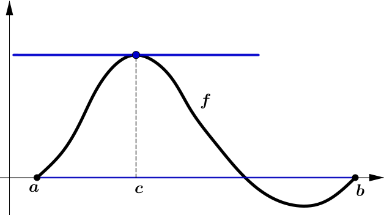
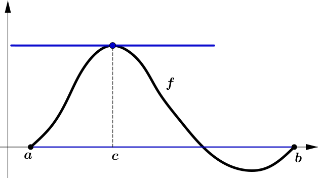

Mathematical Analysis
Leture 12
6.2 Mean value theorem
Definition 6.2.1.
Let $S \subset \R$ be a set and
let $f \colon S \to \R$ be a function.
The function $f$ is said to have
a relative maximum
at $c \in S$ if there exists a $\delta>0$
such that for all $x \in S$ where $\abs{x-c} \lt \delta,$
we have $f(x) \leq f(c).$
The definition of
relative minimum
is analogous.
6.2 Mean value theorem
Lemma 6.2.1. Suppose $f \colon (a,b) \to \R$ is differentiable at $c \in (a,b),$ and $f$ has a relative minimum or a relative maximum at $c.$ Then $f'(c) = 0.$
6.2 Mean value theorem
Lemma 6.2.1. Suppose $f \colon (a,b) \to \R$ is differentiable at $c \in (a,b),$ and $f$ has a relative minimum or a relative maximum at $c.$ Then $f'(c) = 0.$
Proof. Suppose $c$ is a relative maximum of $f.$ That is, there is a $\delta > 0$ such that for every $x \in (a,b)$ where $\abs{x-c}\lt \delta,$ we have $f(x)-f(c) \leq 0.$
If $\,c \lt x \lt c+\delta,$
then $\,\ds \frac{f(x)-f(c)}{x-c} \leq 0 ,$
and if $\,c-\delta \lt y \lt c,$
then $\,\ds \frac{f(y)-f(c)}{y-c} \geq 0 .$
6.2 Mean value theorem
Lemma 6.2.1. Suppose $f \colon (a,b) \to \R$ is differentiable at $c \in (a,b),$ and $f$ has a relative minimum or a relative maximum at $c.$ Then $f'(c) = 0.$
Proof. $\quad \ds \frac{f(x)-f(c)}{x-c} \leq 0 \;\;$ and $\;\;\ds \frac{f(y)-f(c)}{y-c} \geq 0 $
Because $c\in(a,b)$, we can construct two sequences $\{x_n\}$ and $\{y_n\},$ which converge to $c$ and satisfy $y_n\lt c\lt x_n$ for all $n\in \N.$ Hence
$ \ds 0\leq $ $ \ds \lim_{n\to\infty} \frac{f(y_n)-f(c)}{y_n-c} = $ $ \ds f'(c) = \lim_{n\to \infty} \frac{f(x_n)-f(c)}{x_n-c} $ $ \ds \leq 0 $
This completes the prove for a maximum. The proof for a minimum is left as an exercise. 📝
6.2.1 Rolle's theorem
Theorem 6.2.2. (Rolle) Let $f \colon [a,b] \to \R$ be continuous function differentiable on $(a,b)$ such that $f(a) = f(b)$. Then there exists a $c \in (a,b)$ such that $f'(c) = 0$.
 

👀 Complementary reading 📖
6.2.2 Mean value theorem
Theorem 6.2.3. (Mean value theorem) Let $f \colon [a,b] \to \R$ be a continuous function differentiable on $(a,b).$ Then there exists a point $c \in (a,b)$ such that \begin{equation*} f(b)-f(a) = f'(c)(b-a) . \end{equation*}
6.2.2 Mean value theorem
Theorem 6.2.3. (Mean value theorem) Let $f \colon [a,b] \to \R$ be a continuous function differentiable on $(a,b).$ Then there exists a point $c \in (a,b)$ such that \begin{equation*} f(b)-f(a) = f'(c)(b-a) . \end{equation*}
Proof of the Mean value theorem
Proof. Let $g \colon [a,b] \to \R$ defined by
$ \ds g(x):= f(x)-f(b)-\frac{f(b)-f(a)}{b-a}(x-b) . $
Note that $g$ is differentiable on $(a,b),$ and also continuous on $[a,b]$ with $g(a) = 0$ and $g(b) = 0.$ Thus there exists a $c \in (a,b)$ such that $g'(c) = 0.$
In other words, $\;f(b)-f(a) = f'(c)(b-a). \; \bs$
6.3 Applications
Theorem 6.3.1. Let $I$ be an interval and let $f \colon I \to \R$ be a differentiable function such that $f'(x) = 0$ for all $x \in I$. Then $f$ is constant.
6.3 Applications
Theorem 6.3.1. Let $I$ be an interval and let $f \colon I \to \R$ be a differentiable function such that $f'(x) = 0$ for all $x \in I.$ Then $f$ is constant.
Proof. Take arbitrary $x,y \in I$ with $x \lt y.$ Since $I$ is an interval, $[x,y] \subset I.$ Then $f$ restricted to $[x,y]$ satisfies the hypotheses of the mean value theorem.
Thus, there is a $c \in (x,y)$ such that
$f(y)-f(x) = f'(c)(y-x).$
As $f'(c) = 0$, we have $f(y) = f(x).$ Therefore, the function is constant. $\; \bs$
6.3 Applications
Theorem 6.3.2. Let $I$ be an interval and let $f \colon I \to \R$ be a differentiable function.
- $f$ is increasing if and only if $f'(x) \geq 0$ for all $x \in I$.
- $f$ is decreasing if and only if $f'(x) \leq 0$ for all $x \in I$.
6.3 Applications
(i) $f$ is increasing if and only if $f'(x) \geq 0$ for all $x \in I$.
Proof.
Let us prove the first item.
$\nec$ Suppose $f$ is increasing.
For all $x,c \in I$ with $x \neq c$,
$\dfrac{f(x)-f(c)}{x-c} \geq 0 .$
If we take the limit as $x$ goes to $c,$ we see that $f'(c) \geq 0.$
6.3 Applications
(i) $f$ is increasing if and only if $f'(x) \geq 0$ for all $x \in I.$
Proof. $\suf$ Now suppose $f'(x) \geq 0$ for all $x \in I.$ Take any $x, y \in I$ where $x \lt y,$ and note that $[x,y] \subset I.$ By the mean value theorem, there is some $c \in (x,y)$ such that
$f(y)-f(x) = f'(c)(y-x).$
As $f'(c) \geq 0$ and $y-x > 0,$ then $f(y) - f(x) \geq 0$ or $f(x) \leq f(y)$, and hence $f$ is increasing. $\,\bs$
Item (ii) is left as an exercise. 📝
6.3 Applications
Theorem 6.3.3. Let $I$ be an interval and let $f \colon I \to \R$ be a differentiable function.
- If $f'(x) > 0$ for all $x \in I,$ then $f$ is strictly increasing.
- If $f'(x) \lt 0$ for all $x \in I,$ then $f$ is strictly decreasing.
6.4 Taylor's theorem
Definition 6.4.1. For an $n$ times differentiable function $f$ defined near a point $x_0 \in \R,$ define the $n$th order Taylor polynomial for $f$ at $x_0$ as
$\ds P_n^{x_0}(x) := \sum_{k=0}^n \frac{f^{(k)}(x_0)}{k!}{(x-x_0)}^k \qquad \qquad \qquad \qquad \quad $
$\ds =\, f(x_0) + f'(x_0)(x-x_0) + \frac{f''(x_0)}{2}{(x-x_0)}^2 \qquad $
$\ds \quad + \, \frac{f^{(3)}(x_0)}{6}{(x-x_0)}^3 + \cdots + \frac{f^{(n)}(x_0)}{n!}{(x-x_0)}^n . $
6.4 Taylor's theorem
Theorem 6.4.1. (Taylor) Suppose $f \colon [a,b] \to \R$ is a function with $n$ continuous derivatives on $[a,b]$ and such that $f^{(n+1)}$ exists on $(a,b).$ Given distinct points $x_0$ and $x$ in $[a,b],$ we can find a point $c$ between $x_0$ and $x$ such that \begin{equation*} f(x)=P_{n}^{x_0}(x)+\frac{f^{(n+1)}(c)}{(n+1)!}{(x-x_0)}^{n+1} . \end{equation*}
👉 $\;R_n^{x_0}(x):=\ds\frac{f^{(n+1)}(c)}{(n+1)!}{(x-x_0)}^{n+1}$ is called the remainder term.
👀 Complementary reading 📖
6.4 Taylor's theorem
Taylor's expansion of $\sin x$ with JavaScript
6.5 Inverse function theorem
Lemma 6.5.1. Let $I,J \subset \R$ be intervals. If $f \colon I \to J$ is strictly monotone (hence one-to-one), onto ($f(I) = J$), differentiable at $x_0 \in I$, and $f'(x_0) \not= 0,$ then the inverse $f^{-1}$ is differentiable at $y_0 = f(x_0)$ and \begin{equation*} (f^{-1})'(y_0) = \frac{1}{f'\bigl( f^{-1}(y_0) \bigr)} = \frac{1}{f'(x_0)} . \end{equation*}
If $f$ is continuously differentiable and $f'$ is never zero, then $f^{-1}$ is continuously differentiable.
Proof of Lemma 6.5.1
Since $f$ strictly monotone, $g:=f^{-1}$ exists and is continuous. Let $x_0,y_0$ be as in the statement. For $x \in I$ write $y :=f(x),$ If $x \not= x_0$ and so $y \not= y_0,$ then
$\ds \frac{g(y)-g(y_0)}{y-y_0} $ $\ds= \frac{g\bigl(f(x)\bigr)-g\bigl(f(x_0)\bigr)}{f(x)-f(x_0)} $ $\ds= \frac{x-x_0}{f(x)-f(x_0)} .$
\begin{equation*} \text{Define }\; Q(x) := \begin{cases} \dfrac{x-x_0}{f(x)-f(x_0)} & \text{if } x \neq x_0, \\ \dfrac{1}{f'(x_0)} & \text{if } x = x_0. \end{cases} \end{equation*}
Proof of Lemma 6.5.1
\begin{equation*} \text{Define }\; Q(x) := \begin{cases} \dfrac{x-x_0}{f(x)-f(x_0)} & \text{if } x \neq x_0, \\ \dfrac{1}{f'(x_0)} & \text{if } x = x_0. \end{cases} \end{equation*}
Now since $f$ is differentiable at $x_0,$
$\ds \lim_{x \to x_0} Q(x) $ $\ds= \lim_{x \to x_0} \frac{x-x_0}{f(x)-f(x_0)} $ $\ds= \frac{1}{f'(x_0)}$ $\ds= Q(x_0).$
Then $\,Q $ is continuous at $x_0.$ As $g(y)$ is continuous at $y_0,$ the composition $Q\bigl(g(y)\bigr) = \dfrac{g(y)-g(y_0)}{y-y_0}$ is continuous at $y_0.$
Proof of Lemma 6.5.1
Therefore
$\ds \frac{1}{f'\bigl(g(y_0)\bigr)}$
$\ds=
Q\bigl(g(y_0)\bigr)$
$\ds= \lim_{y \to y_0} Q\bigl(g(y)\bigr)
$
$\ds \quad= \lim_{y \to y_0} \frac{g(y)-g(y_0)}{y-y_0} .$
$\Ra\,$ $g$ is differentiable at $y_0$ and $g'(y_0) =\dfrac{1}{f'\left(\vphantom{1^1_1}g(y_0)\right)}.$
Proof of Lemma 6.5.1
Finally, if $f'$ is continuous and nonzero at all $x \in I,$
then the lemma applies at all $x \in I.$
Since $g$ is also
continuous (it is differentiable),
the derivative
$$g'(y) =\frac{1}{f'\left(\vphantom{1^1_1}g(y)\right)}$$
must be continuous. $\;\bs$
6.5 Inverse function theorem
Theorem 6.5.2. (Inverse function theorem) Let $f \colon (a,b) \to \R$ be a continuously differentiable function, $x_0 \in (a,b)$ a point where $f'(x_0) \not= 0.$ Then there exists an open interval $I \subset (a,b)$ with $x_0 \in I,$ the restriction $f|_{I}$ is injective with a continuously differentiable inverse $g \colon J \to I$ defined on an interval $J := f(I),$ and \begin{equation*} g'(y) = \frac{1}{f'\bigl( g(y) \bigr)} \; \text{ for all }\; y \in J. \end{equation*}
Proof. Follows from previous Lemma 6.5.1, Theorem 5.4.1 and Theorem 6.3.3. 📝
Example 6.5.1.
Consider the function $f:\R\to \R$ defined by \[f(x):=x^5+4x+3.\]
$f$ is continuous and strictly monotone increasing, and $f'(x) = 5x^4+ 4$ is never zero. Therefore, by the inverse function theorem, the function $g=f^{-1}$ is differentiable at every point. If we take $x_0=1,$ then since $f(1)=8$
we have that $ \ds\ g'(8) $ $ \ds = g'(\,f(1)) $ $ \ds = \frac{1}{f'(1)} $ $ \ds =\frac{1}{9}. $
Example 6.5.2.
Let $f:\R\to \R$ defined by $f(x):=x^3.$
The hypothesis that $f'(x_0)\neq 0$ is essential in the inverse function theorem. In this case, $f(x)= x^3$ is one-to-one and onto, so $\,f^{-1}(y) = y^{1/3}$ exists on $\R.$ The function $f$ has a continuous derivative, but $f^{-1}$ has no derivative at the origin. The issue is that $f'(0) = 0.$
Example 6.5.2.
The hypothesis that $f'(x_0)\neq 0$ is essential in the inverse function theorem. In this case, $f(x)= x^3$ is one-to-one and onto, so $\,f^{-1}(y) = y^{1/3}$ exists on $\R.$ The function $f$ has a continuous derivative, but $f^{-1}$ has no derivative at the origin. The issue is that $f'(0) = 0.$